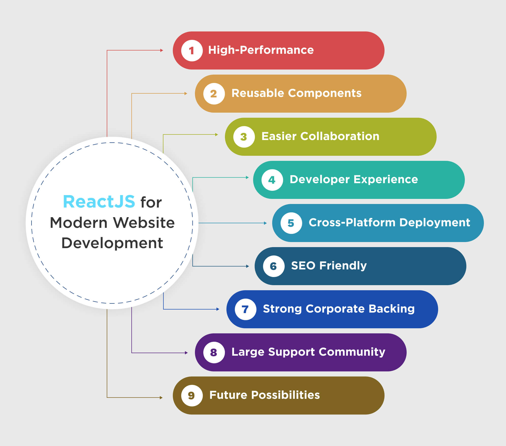
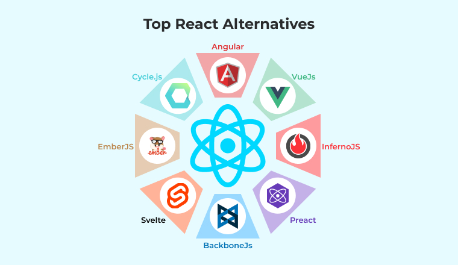

1. Qu’est-ce que React JS et pourquoi est-il important ?
Imagine que tu construis une maison avec des blocs de Lego. Plutôt que de reconstruire toute la maison à chaque modification, tu changes simplement une pièce sans toucher aux autres. C’est exactement ainsi que React fonctionne.
➡️ Avant React, lorsque tu interagissais avec un site web (par exemple en cliquant sur un bouton), toute la page devait être rechargée, ce qui pouvait la rendre lente.
➡️ Avec React, seule la partie qui change est mise à jour. Cela rend l’expérience utilisateur plus fluide et rapide.
Exemple concret : Imaginons que nous ayons un compteur qui affiche un nombre et qui s’incrémente à chaque clic.
Sans React : Chaque clic sur le bouton entraînerait un rechargement de la page entière.
Avec React : Seul le chiffre du compteur changerait sans recharger tout le reste.
2. Pourquoi choisir React JS ?
✅ 1. Performance et rapidité : Grâce au Virtual DOM (un modèle de page optimisé), React sait exactement quelles parties mettre à jour, rendant les applications plus rapides.
✅ 2. Réutilisation des composants : Avec React, on peut créer des composants réutilisables, ce qui permet de gagner du temps.
✅ 3. Facilité d’apprentissage : React utilise JavaScript, un langage très populaire. Avec quelques bases, il est facile de comprendre son fonctionnement.
✅ 4. Un large écosystème : React s’intègre bien avec d’autres outils comme Next.js (pour le SEO et la performance), Redux (pour la gestion des données), ou React Native (pour créer des applications mobiles).
3. Les nouveautés des dernières versions (React 18 et +)
🚀 1. Nouvelle gestion du rendu concurrent : React 18 permet de charger progressivement certaines parties d’une page, ce qui améliore la rapidité d’affichage.
🚀 2. Server Components : Plutôt que d’afficher une page entièrement depuis le navigateur, une partie peut être générée sur le serveur, réduisant ainsi le temps de chargement.
🚀 3. Suspense pour les requêtes de données : Une meilleure gestion des chargements de données, rendant les interfaces plus fluides.
4. Alternatives à React JS
🔹 Vue.js (Créé en 2014)
📌 Points forts : Facile à apprendre et à utiliser
📌 Très léger et performant pour les petites applications
📌 Documentation claire et complète
📌 Exemple d’utilisation : Utilisé par Alibaba, Xiaomi, GitLab
🔹 Angular (Créé par Google en 2010)
📌 Points forts : Idéal pour les applications complexes et les entreprises
📌 Intègre directement des outils avancés (comme la gestion des formulaires et des animations)
📌 Sécurisé et robuste
📌 Exemple d’utilisation : Utilisé par Google, Microsoft, Forbes
🔹 Svelte (Créé en 2016)
📌 Points forts : Très rapide et optimisé
📌 Moins de code à écrire que React et Vue
📌 Pas besoin de Virtual DOM, ce qui le rend ultra-performant
📌 Exemple d’utilisation : Utilisé par The New York Times, IBM

➡️ Quel choix faire ?
Petit projet rapide → Vue.js
Application robuste et complexe → Angular
Optimisation et performance → Svelte
Projet moderne et flexible → React
5. Tendances à venir dans React JS
✅ Server-side rendering (SSR) : Permet de charger une page plus rapidement en générant certaines parties côté serveur.
✅ Streaming : Affichage progressif du contenu sans attendre que tout soit chargé.
✅ React Native : Utiliser React pour développer des applications mobiles Android et iOS sans devoir tout coder deux fois.
Conclusion
React JS est aujourd’hui un des outils les plus puissants pour créer des applications modernes et réactives. Grâce à sa facilité d’apprentissage, ses performances et son large écosystème, il reste un excellent choix pour les développeurs. Cependant, d’autres alternatives comme Vue.js, Angular ou Svelte existent et peuvent être adaptées selon le projet.